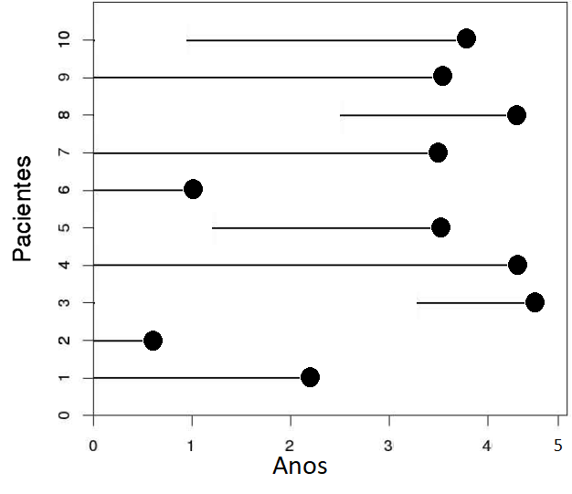
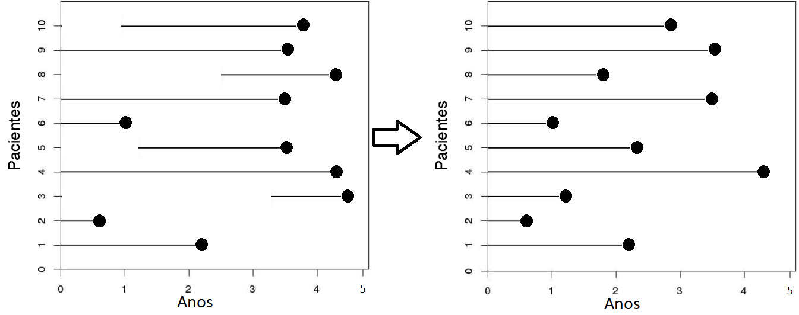
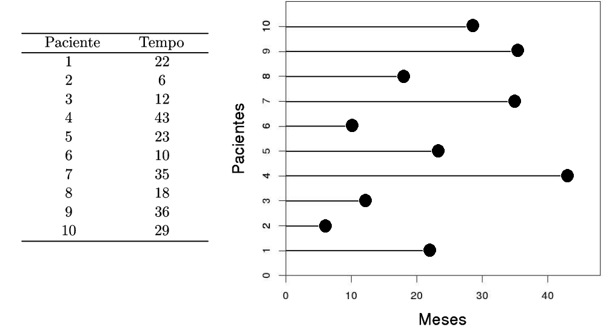
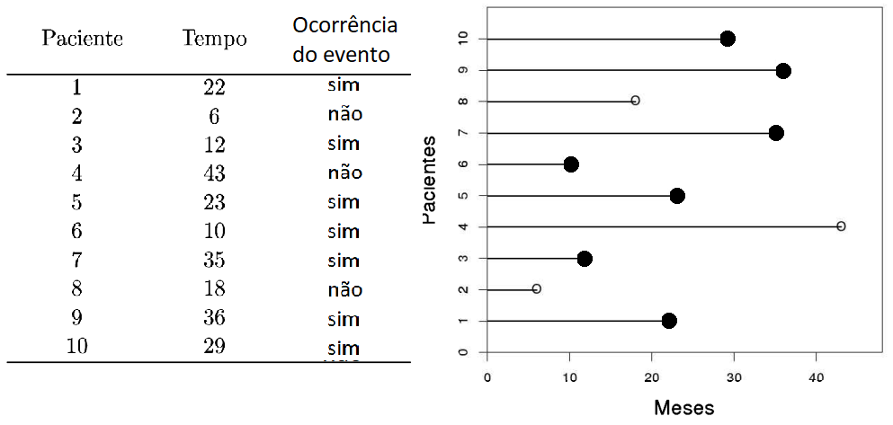
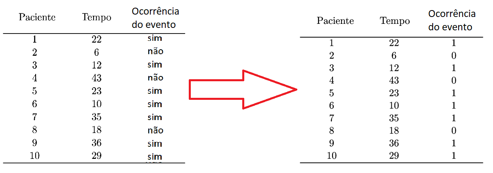
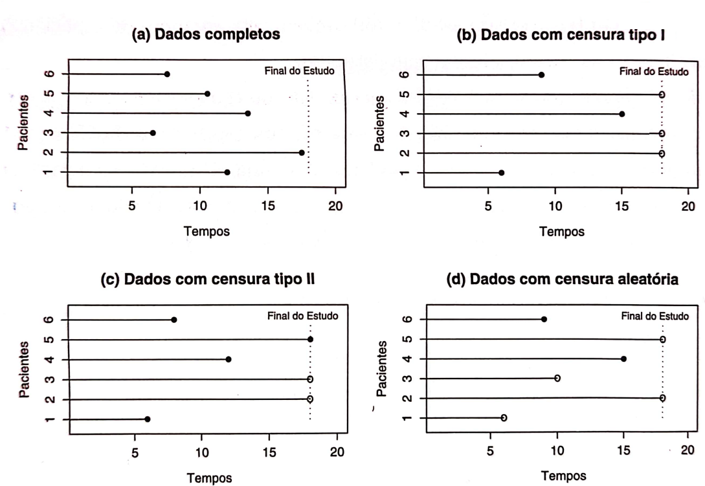

CONCEITOS INICIAIS
Universidade Federal Fluminense
O tempo até a ocorrência de um evento de interesse é formado por três elementos essenciais:
Esses elementos são fundamentais para qualquer estudo de:
💡 O tempo é o eixo central que conecta observações, análises e conclusões.
Toda a metodologia de análise de sobrevivência e confiabilidade depende da correta definição desses elementos.
O tempo inicial é o ponto de partida para medir o tempo até a ocorrência de um evento de interesse.
Sua definição precisa e consistente é fundamental para garantir a validade do estudo.
Garantir que todos os indivíduos ou unidades sejam comparáveis a partir do mesmo ponto evita vieses.
Exemplos práticos:
A escala de medida define em quais unidades o tempo até a ocorrência do evento de interesse será registrado.
É fundamental escolher uma escala adequada ao contexto, garantindo precisão e comparabilidade.
Quase sempre trata-se do tempo real (ou “tempo de relógio”), mas também podem ser escalas operacionais ou de produção.
Exemplos de escala de medida:
O evento de interesse é o acontecimento que estamos estudando, cuja ocorrência marca o fim do tempo observado.
Na maioria dos casos, trata-se de eventos indesejáveis, mas podem ser neutros ou até desejáveis, dependendo do estudo.
É fundamental que o evento seja precisamente definido e mensurável, para garantir validade e comparabilidade.
Exemplos de evento de interesse:
Um estudo clínico aleatorizado foi realizado para investigar o efeito da terapia com esteróide no tratamento de hepatite viral aguda. Vinte e nove pacientes com essa doença foram aleatorizados para receber placebo ou tratamento com esteróide.
Cada paciente foi acompanhado por 16 semanas, ou até a morte (evento de interesse) ou perda de acompanhamento. Os tempos de sobrevivência foram observados em semanas para ambos os grupos.
Um estudo clínico aleatorizado foi realizado para investigar o efeito da terapia com esteróide no tratamento de hepatite viral aguda. Vinte e nove pacientes com essa doença foram aleatorizados para receber placebo ou tratamento com esteróide.
Cada paciente foi acompanhado por 16 semanas, ou até a morte (evento de interesse) ou perda de acompanhamento. Os tempos de sobrevivência foram observados em semanas para ambos os grupos.
Uma empresa realizou um teste de confiabilidade para avaliar a vida útil de um novo modelo de capacitor eletrônico utilizado em equipamentos industriais.
Cem capacitores foram produzidos no mesmo lote e colocados em operação simultaneamente em um ambiente controlado de laboratório, sob condições constantes de temperatura e tensão elétrica.
O teste teve duração máxima de 2.000 horas. O acompanhamento de cada componente foi encerrado quando ocorreu a falha do capacitor (evento de interesse) ou quando o teste foi finalizado sem falha.
O tempo até a falha foi registrado em horas para todos os componentes.

Veja como ficam agora os dados de forma comparável na origem:


Considere agora outros 10 pacientes:

As bolinhas vazias representam observações censuradas.
Assim, ao lado do tempo observado, deve ser reportado se houve censura ou nao

TIPO I
Estudos finalizados após um período pré-fixado, com alguns indivíduos ainda sem evento. Exemplo: estudo clínico de 12 meses sobre recuperação de pacientes, em que alguns ainda não tiveram o desfecho ao final.
TIPO II
Estudos finalizados após a ocorrência do evento em um número pré-definido de indivíduos. Exemplo: teste de confiabilidade de 50 máquinas, encerrando o estudo assim que 10 delas falharem.
ALEATÓRIA
Ocorre quando o indivíduo sai do estudo antes do fim sem apresentar o evento (perda de acompanhamento). Exemplo: paciente abandona um estudo antes do estudo acabar.

Um estudo clínico descritivo observacional acompanhou um conjunto de indivíduos com o objetivo de analisar a idade de aparecimento de um determinado sintoma clínico. O acompanhamento teve início em uma data comum para todos os participantes. Os indivíduos eram avaliados por meio de exames periódicos ao longo do tempo. O estudo foi encerrado após um período previamente definido. Com base nas situações abaixo, identifique o tipo de censura envolvido em cada caso.
Um indivíduo ingressou no estudo já apresentando o sintoma, sem que se conheça a idade exata em que ele surgiu.
Dois indivíduos não apresentaram o sintoma até o término do estudo, permanecendo assintomáticos durante todo o acompanhamento.
Dois indivíduos apresentaram o sintoma em algum momento entre duas avaliações consecutivas, mas o instante exato de ocorrência não pôde ser determinado.
Um indivíduo mudou de cidade durante o acompanhamento, interrompendo sua participação no estudo sem apresentar o sintoma até então.
CENSURA NÃO INFORMATIVA
Vantagens:
Desvantagens:
CENSURA INFORMATIVA
Vantagens:
Desvantagens:
Imagine que você é pesquisador(a) em oncologia. Você quer estudar o tempo até a ocorrência de uma recidiva de câncer em pacientes. Mas os dados que você consegue têm algumas limitações:
Esses cenários não são censura comum — são exemplos de truncamento.
O truncamento ocorre quando só observamos indivíduos cujo tempo de evento cai dentro de um intervalo específico.
🔹 Diferente da censura, onde o indivíduo entra no estudo e pode não completar o evento,
🔹 No truncamento, indivíduos fora do intervalo de observação nem aparecem na amostra.
Exemplo intuitivo:
Ocorre quando indivíduos que experimentaram o evento antes de um certo tempo não entram no estudo.
Exemplo prático:
Impacto:
- A amostra está “viciada” para tempos curtos. - Estatísticas estimadas sem correção ficam enviesadas.
Ocorre quando indivíduos que experimentam o evento após um certo tempo não entram no estudo.
Exemplo prático:
Impacto:
- Amostra “viciada” para tempos longos. - Estimativas de sobrevivência superestimadas se ignorarmos o truncamento.
| Aspecto | Censura | Truncamento |
|---|---|---|
| Quem aparece no estudo | Todos entram | Apenas dentro de certo intervalo |
| Observação completa? | Nem sempre | Sempre (dentro do intervalo) |
| Exemplo | Paciente sai do estudo | Paciente já morreu antes da inclusão |
| Viés se ignorado | Pode subestimar/overestimar | Estatísticas podem ficar enviesadas |
Nos exemplos a seguir, há truncamento à direita ou à esquerda?